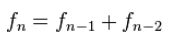
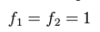

Fibonacci-Reihe
Einführung
Die Fibonacci-Reihe ist unendliche Folge von Zahlen, bei der die Summe zweier benachbarter Zahlen die unmittelbar folgende Zahl ergibt. Allgemein gilt:

Allerdings muss es Anfangswerte geben. Deshalb gilt für die erste beiden Elemente:

Die ersten Elemente der Fibonacci-Reihe sind:
1, 1, 2, 3, 5, 8, 13, ...
Beispiel
Wir wollen das nächste Element dieser Reihe berechnen:
Reihe: 1, 1, ?
Das nächste Element lässt sich aus der Summe seiner beiden Vorgänger berechnen:
1 + 1 = 2
Reihe: 1, 1, 2
So setzt sich die Reihe fort:
1 + 2 = 3
Reihe: 1, 1, 2, 3
2 + 3 = 5
Reihe: 1, 1, 2, 3, 5
3 + 5 = 8
Reihe: 1, 1, 2, 3, 5, 8
Aufgabe
Speichere die ersten 15 Elemente der Fibonacci-Reihe in ein Array. Gib das Ergebnis aus, um die Aufgabe abzuschließen.
Hinweis
Ein Array kann mit dem Befehl printIntArray ausgegeben werden. Dabei ist a das Array und n die Anzahl der Elemente des Arrays.
int a[n];
printIntArray(a, n);
Für diesen Befehl muss die Bibliothek array.h eingebunden werden.
#include <array.h>